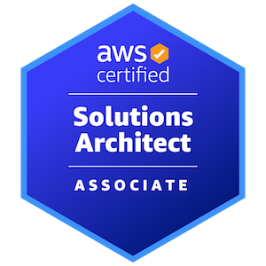

Piotr Rzepkowski
Junior DevOps Engineer
AWS Certified Junior DevOps Engineer with ~1.5 year of experience in automating and supporting business deployments over infrastructure. Proficient in Jenkins and Python. Passionate about DevOps, the Cloud, networking, virtualization, and automation, and have a keen interest in technologies such as AWS, Docker, Kubernetes, Terraform, Ansible, Jenkins, GitLab CI.
Szczecin, Poland
work experience
Junior DevOps Engineer
MailMetrics
05/2023 - Present Achievements- Deploying and orchestrating microservice-based applications using Kubernetes and Helm in hybrid cloud environment
- Provisioning and managing infrastructure on AWS using IaC approach with Terraform/Terragrunt
- Creating custom dashboards in Datadog to track, analyze and display key performance metrics of various services
- Performing maintenance and upgrades of core infrastructure resources such as databases (SQL & noSQL), storages, caches and message brokers
- Administrating Linux based cloud- and on premise virtual machines (EC2, vSphere)
- Developing and maintaining CI/CD pipelines for automated testing and deployment (Bitbucket pipelines, Terraform Cloud, ArgoCD, Atlantis)
- Monitoring and troubleshooting both AWS and on premise environments, including log analysis and performance tuning
Junior DevOps Engineer
GlobalLogical Poland
02/2022 - 05/2023 Achievements- Developed over 10 automation tools (Python) for automotive infotainment system
- Provided CI/CD workflows using Jenkins and GitLab CI
- Helped migrate CI/CD Pipelines from Jenkins to GitLab CI
- Supported Solution Architects in architectural decisions on CI/CD infrastructure by creating architecture diagrams (HLD/LLD)
- Improved stability and robustness of production-critical workflows
- Helped developers to focus more on developing new features by establishing automatic linting, unit tests and e2e tests as a part of continuous integration workflow
- Collected logs and metrics related to the CI/CD workflow to look for areas of improvement
Associate Software Engineer
GlobalLogical Poland
07/2021 - 02/2022 Achievements- Designed and implementation of REST/WebSocket APIs on AWS API Gateway, compliant with OpenAPI specification
- Modelled and design noSQL database schema, identifying access patterns and optimizing for fast queries
- Containerized the web application backend services using IaC for Docker containers
- Added federation support to customer-facing web collaboration applications using Amazon Cognito, as well as adding user sign-up and sign-in
- Provided containerized infrastructure for video chat functionality for online collaboration application using WebRTC, Jitsi and Amazon Kinesis Video Streams

education
Bachelor's Degree in Computer Science
Maritime University of Szczecin
Szczecin, Poland
02/2018 - 07/2022Thesis: Implementation of visual road line detection system based on a 3D camera
technical skills
Containerization & VMs:
Docker, Podman, Vagrant, vSphere, Kubernetes
Configuration management:
Ansible
Monitoring & Observability:
Datadog, CloudWatch
CI/CD:
Jenkins, GitLab CI, Bitbucket Pipelines, Atlantis, ArgoCD
Programming Languages:
Python, Groovy, Typescript
Cloud Infrastructure:
AWS

personal projects
Flask app in Kubernetes
Python, Kubernetes, Helm, EFK stack, MySQL- Python app from Flask documentation, deployed in a local Kubernetes cluster.
- Uses an external MySQL database to store stateful data
- Deployed as a highly configurable Helm Chart
- Contains a custom EFK Helm Chart to collect and visualize logs from cluster and application
YT Downloader
Python, CLI App- Command line interface written in python for downloading youtube videos.
- Supports downloading multiple videos asynchronously.
- Includes testing, automation and dependency management
Sorting algorithms SPA
JavaScript, TypeScript, React (Redux, Router)- Visualization of various sorting algorithms in real-time,
- Includes time measurements and comparison between sorting methods.
certificates
AWS Certified Solutions Architect - Associate
09/2023 - 09/2026 PCAP - Certified Associate in Python
01/2020 - non-expiring
CPA - C++ Certified Associate Programmer
01/2020 - non-expiring